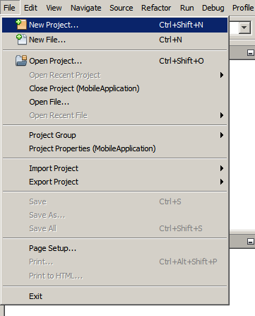
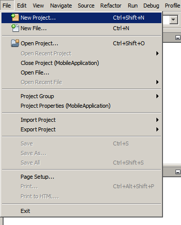

- In the Project Name field, type
HelloWorldApp. - Leave the Use Dedicated Folder for Storing Libraries checkbox unselected.
- In the Create Main Class field, type
helloworldapp.HelloWorldApp.

Welcome to NetBeans IDE!
This tutorial provides a very simple and quick introduction to the NetBeans IDE workflow by walking you through the creation of a simple "Hello World" Java console application. Once you are done with this tutorial, you will have a general knowledge of how to create and run applications in the IDE.
This tutorial takes less than 10 minutes to complete.
After you finish this tutorial, you can move on to the learning trails, which are linked from the Documentation, Training & Support page. The learning trails provide comprehensive tutorials that highlight a wider range of IDE features and programming techniques for a variety of application types. If you do not want to do a "Hello World" application, you can skip this tutorial and jump straight to the learning trails.
Contents

To complete this tutorial, you need the following software and resources.
| Software or Resource | Version Required |
|---|---|
| NetBeans IDE | version 7.2, 7.3, 7.4, or 8.0 |
| Java Development Kit (JDK) | version 6, 7, or 8 |
To create an IDE project:

HelloWorldApp.helloworldapp.HelloWorldApp.
The project is created and opened in the IDE. You should see the following components:
HelloWorldApp open.

Because you have left the Create Main Class checkbox selected in the New Project wizard, the IDE has created a skeleton main class for you. You can add the "Hello World!" message to the skeleton code by replacing the line:
// TODO code application logic here
with the line:
System.out.println("Hello World!");
Save the change by choosing File > Save.
The file should look something like the following code sample.
/*
* To change this template, choose Tools | Templates
* and open the template in the editor.
*/
package helloworldapp;
/**
*
* @author <your name>
*/
public class HelloWorldApp {
/**
* @param args the command line arguments
*/
public static void main(String[] args) {
System.out.println("Hello World!");
}
}
Because of the IDE's Compile on Save feature, you do not have to manually compile your project in order to run it in the IDE. When you save a Java source file, the IDE automatically compiles it.
The Compile on Save feature can be turned off in the Project Properties window. Right-click your project, select Properties. In the Properties window, choose the Compiling tab. The Compile on Save checkbox is right at the top. Note that in the Project Properties window you can configure numerous settings for your project: project libraries, packaging, building, running, etc.
To run the program:
The next figure shows what you should now see.

Congratulations! Your program works!
If there are compilation errors, they are marked with red glyphs in the left and right margins of the Source Editor. The glyphs in the left margin indicate errors for the corresponding lines. The glyphs in the right margin show all of the areas of the file that have errors, including errors in lines that are not visible. You can mouse over an error mark to get a description of the error. You can click a glyph in the right margin to jump to the line with the error.
Once you have written and test run your application, you can use the Clean and Build command to build your application for deployment. When you use the Clean and Build command, the IDE runs a build script that performs the following tasks:
To build your application:
You can view the build outputs by opening the Files window and expanding
the HelloWorldApp node. The compiled bytecode file HelloWorldApp.class is within the build/classes/helloworldapp subnode.
A deployable JAR file that contains the HelloWorldApp.class is within the dist node.

You now know how to accomplish some of the most common programming tasks in the IDE.
For information on how to run the application from the command line, see the Starting Your Java Application chapter of the Packaging and Distributing Java Applications tutorial.
For information on creating and working with standard and free-form Java projects, see Creating Java Projects in Developing Applications with NetBeans IDE.
To learn more about the IDE workflow for developing Java applications, including classpath management, see Developing General Java Applications.
For detailed instructions on how to compile and run a simple "Hello World!" application on your operating system, see the The "Hello World" Application lesson of the Java Tutorials.
To find information specific to the kind of applications you are developing, use the NetBeans IDE learning trail for that type of application. Each learning trail contains a series of tutorials and guides that range in scope from basic to advanced. The following learning trails are available: